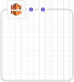

Canvas (画布) 窗格
Designer 在 canvas 窗格中以图表形式显示模板资源。您可以在此窗格中修改图表的布局、添加或删除资源、添加或删除资源间的连接。例如，可以从 Resource types 窗格将自动扩缩组和启动配置添加到 canvas 窗格。要连接这些相关资源，在它们之间拖出一条连接线。
Designer 如何对资源建模？
当您将资源从 Resource types 窗格拖放到 canvas 窗格时，Designer 会将其建模为容器或方形对象。
- 容器
-
容器资源是可调整大小的矩形，其中可包含其他资源。例如，对于
AWS::EC2::VPC资源类型，Designer 即将其建模为容器。您可以将资源 (如子网) 拖放到 VPC 中。容器资源
 - 方形对象
-
方形对象资源无法调整大小或包含其他资源。例如，对于
AWS::EC2::Instance资源类型，Designer 即将其建模为方形对象。方形对象
连接资源
您通过连接资源来在相关资源之间创建关联。例如，当您向 canvas 窗格添加 Internet 网关和 VPC 时，它们之间没有联系。要将此网关连接到 VPC，您必须连接它们。连接资源的方法取决于资源类型和 Designer 对于此资源的建模方式。下面的描述和图表介绍了各种方法。
- 向容器添加资源
-
当您将有效的资源拖放到容器中时，Designer 会自动创建资源和容器之间的关联。例如，VPC 是容器资源；您可以将子网拖放到 VPC 中，Designer 会自动关联这两种资源。

这些关联在模板中以
Ref内部函数的形式表示，如以下示例所示：JSON
"PublicSubnet": { "Type": "AWS::EC2::Subnet", "Properties": { "VpcId": { "Ref": "VPC" }, "CidrBlock": "10.0.0.0/24" }YAML
PublicSubnet: Type: 'AWS::EC2::Subnet' Properties: VpcId: !Ref VPC CidrBlock: 10.0.0.0/24在某些情况下，将资源放入容器不会创建关联；您必须在资源间拖出一条连接线 (有关在资源之间拖放连接的信息，请阅读下一个方法)。要查看 Designer 是否关联了资源，请使用集成的 JSON 和 YAML 编辑器查找从一个资源到另一个资源的
Ref。例如，当您在子网容器中添加自动扩缩组时，Designer 不会指定此组的VPCZoneIdentifier（子网）属性。要关联这两个资源，您必须拖出一条从自动扩缩组到此子网的连接线。 - 资源之间的拖放连接
-
每个方形和容器资源的边缘都有一个或多个点，代表您可以与之创建连接的资源。要创建连接，可以拖出一条从此点到相应资源类型的连接线。例如，要将 Internet 网关连接到 VPC，可以拖出一条从 VPC 网关连接点到 VPC 上任意位置的线。

这些关联在模板中以
Ref内部函数或独立的资源类型表示。例如，在将 Internet 网关连接到 VPC 时，Designer 会在模板中创建AWS::EC2::VPCGatewayAttachment资源类型，以关联它们。Resource types（资源类型）窗格中未列出此类资源。JSON
"VPCGatewayAttachment": { "Type": "AWS::EC2::VPCGatewayAttachment", "Properties": { "InternetGatewayId": { "Ref": "InternetGateway" }, "VpcId": { "Ref": "VPC" } }YAML
VPCGatewayAttachment: Type: 'AWS::EC2::VPCGatewayAttachment' Properties: InternetGatewayId: !Ref InternetGateway VpcId: !Ref VPC - 资源之间的编码连接
-
在某些情况下，必须编辑模板的 JSON 或 YAML 才能创建连接，例如：当连接两个安全组时。如果必须编辑 JSON 或 YAML 才能创建连接，则需要创建硬编码的连接 (短划线连接)。您无法在 canvas 窗格中创建或编辑此类连接。

通常，在资源的属性中嵌入引用 (
Ref) 时，即创建了硬编码连接。例如，您可以在两个安全组之间定义连接，其中，一个安全组拥有允许来自另一安全组的流量的嵌入式传入规则。下面的WebServerSecurityGroup资源拥有一条引用PublicLoadBalancerSecurityGroup资源的传入规则。JSON
"WebServerSecurityGroup": { "Type": "AWS::EC2::SecurityGroup", "Properties": { "VpcId": { "Ref": "VPC" }, "GroupDescription": "Allow access from HTTP and SSH traffic", "SecurityGroupIngress": [ { "IpProtocol": "tcp", "FromPort": 80, "ToPort": 80, "CidrIp": "0.0.0.0/0" }, { "IpProtocol": "tcp", "FromPort": 22, "ToPort": 22, "CidrIp": { "Ref": "SSHLocation" } } ] } ...YAML
WebServerSecurityGroup: Type: 'AWS::EC2::SecurityGroup' Properties: VpcId: !Ref VPC GroupDescription: Allow access from HTTP and SSH traffic SecurityGroupIngress: - IpProtocol: tcp FromPort: 80 ToPort: 80 CidrIp: 0.0.0.0/0 - IpProtocol: tcp FromPort: 22 ToPort: 22 CidrIp: !Ref SSHLocation
使用资源菜单访问常见资源操作
Resource 菜单提供对常见资源操作的便捷访问：编辑资源属性、复制资源、删除资源或查看资源文档。要查看 Resource 菜单，可以右键单击 canvas 窗格中的资源。文档链接指向模板参考，其中描述了该资源的属性和语法。
资源菜单

定义明确的依赖关系
要指定 AWS CloudFormation 创建和删除资源的顺序，您可以创建明确的依赖关系。要覆盖并行资源创建和删除，明确的依赖关系是非常有用的。AWS CloudFormation 自动确定可以并行处理模板中的哪些资源，而无法处理哪些资源。当您指定的属性引用相同模板中另一来源的属性（使用 Ref 内部函数）或获取另一资源的属性（使用 Fn::GetAtt 内部函数）时，即暗示着存在依赖关系，AWS CloudFormation 会以正确的顺序构建它们。
但是，在某些情况下，您必须明确定义依赖关系。例如，在网关连接到 VPC 之前，路由规则无法使用互联网网关。通常，AWS CloudFormation 在创建 Internet 网关后会因为隐式依赖关系立即创建路由规则。但是，AWS CloudFormation 可能在将 Internet 网关连接到 VPC 之前即创建规则，从而导致出错。因此，您必须明确定义网关-VPC 连接的依赖关系。
要创建明确的依赖关系，可以从路由上的 DependsOn (*) 点拖一条线到网关-VPC 连接。

有关何时可能需要创建明确依赖关系的更多信息，请参阅DependsOn 属性。
JSON
在 JSON 中，这些明确的依赖关系以资源上的 DependsOn 属性表示，如以下示例所示：
"PublicRoute": { "Type": "AWS::EC2::Route", "DependsOn": "VPCGatewayAttachment", "Properties": { "DestinationCidrBlock": "0.0.0.0/0", "RouteTableId": { "Ref": "PublicRouteTable" }, "GatewayId": { "Ref": "InternetGateway" } }
YAML
在 YAML 中，这些明确的依赖关系以资源上的 DependsOn 属性表示，如以下示例所示：
PublicRoute: Type: 'AWS::EC2::Route' DependsOn: - VPCGatewayAttachment Properties: DestinationCidrBlock: 0.0.0.0/0 RouteTableId: !Ref PublicRouteTable GatewayId: !Ref InternetGateway